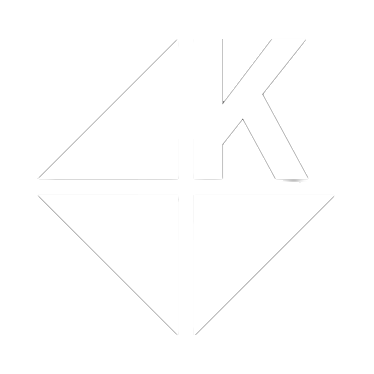
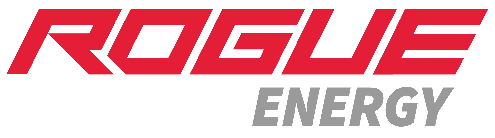

Live Streamers
Support for streaming PCs, gaming systems, capture devices, OBS, encoders, network stability and the workflow that keeps a live production online.
Streaming, production and content creation put unusual demands on computers, networks, software and storage. TTR brings those pieces together so creators can spend less time troubleshooting technology and more time creating.
Creator environments can combine gaming systems, editing workstations, capture devices, cameras, audio gear, streaming software, storage and fast networking in one workflow. TTR understands how those parts affect each other.
Support for streaming PCs, gaming systems, capture devices, OBS, encoders, network stability and the workflow that keeps a live production online.
Performance planning for editing systems, storage, large media files, backups, peripherals and the workstations used to publish consistently.
Planning and support for complex creator desks where multiple computers, displays, capture devices and control systems all need to work together.
Technology support for dedicated studios, production spaces and creator teams that need reliable systems, networking and cleaner technical organization.
TTR combines technical support, proactive management and creator specific optimization under one relationship. The goal is not to sell unnecessary tools. It is to make the technology you depend on more reliable, easier to manage and better matched to your workflow.
Technical problems do not wait for business hours, and neither do live events, uploads or production deadlines. TTR provides around the clock support availability when creator systems stop cooperating.
Raw footage, project files, settings, graphics and creator assets can represent years of work. TTR helps build a practical approach to protecting that data and improving recovery readiness.
Creator systems need maintenance just like business workstations, but downtime can interrupt content schedules. Remote management allows TTR to support and maintain systems without turning every issue into an onsite project.
Creator technology should not be purely reactive. Monitoring supported systems gives TTR better visibility into health and performance so potential problems can be identified earlier.
Streaming quality is a balance between hardware, encoder settings, software configuration and available bandwidth. TTR tunes those pieces together instead of relying on one generic preset.
A creator studio works best when the technology is planned as one system. TTR helps organize the computers, displays, cameras, networking and supporting equipment around the way the space is actually used.
A stream problem may start with software, a driver, an encoder, a capture device, a network issue or the hardware itself. TTR looks at the workflow as a system instead of treating every symptom as an isolated problem.
When one team understands how your creator setup fits together, troubleshooting gets cleaner and future upgrades can be planned around the full workflow instead of one piece at a time.
Talk With TTR About Your SetupCreator technology is only one part of the ecosystem. TTR works alongside brands and communities that support creators, gaming and the people behind the content.




Tell TTR how you create today, what is slowing you down and what you want the setup to do next. We will build the conversation around your actual workflow.
Schedule Creator Consultation